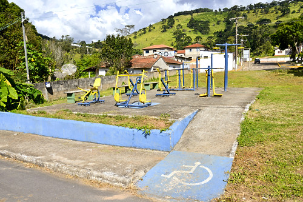

Perguntas e respostas sobre temas frequentes
Como a acessibilidade digital pode melhorar a experiência de pessoas com deficiência visual ?
A acessibilidade digital pode melhorar significativamente a experiência de pessoas com deficiência visual ao garantir que conteúdos online sejam acessíveis por meio de tecnologias assistivas como leitores de tela. Sites que implementam corretamente descrições de imagens (alt text), cabeçalhos estruturados e navegação por teclado permitem que essas pessoas interajam de maneira eficiente com o conteúdo digital. O contraste de cores adequado também é importante, garantindo legibilidade para aqueles com baixa visão.

Quais são os desafios enfrentados por pessoas com deficiência auditiva em ambientes educacionais?
Pessoas com deficiência auditiva enfrentam desafios em ambientes educacionais, especialmente em salas de aula tradicionais onde a comunicação é predominantemente oral. A falta de intérpretes de Libras, legendas em vídeos educativos e sistemas de amplificação de som são barreiras comuns. Soluções incluem a implementação de tecnologias de legenda ao vivo e o uso de materiais visuais e textuais, que ajudam a tornar o aprendizado mais acessível para todos.
O que são rampas de acesso e qual é a sua importância na arquitetura inclusiva?
Rampas de acesso são estruturas inclinadas que permitem a pessoas com mobilidade reduzida, como usuários de cadeiras de rodas, acessar diferentes níveis de um edifício ou espaço público. Elas são essenciais na arquitetura inclusiva, pois garantem que todos possam se mover de forma independente e com dignidade. A ausência de rampas ou sua má implementação pode limitar a mobilidade e a autonomia dessas pessoas, impedindo seu acesso a diversos locais.
Qual é o papel da acessibilidade no transporte público?
A acessibilidade no transporte público é fundamental para garantir que pessoas com deficiência possam se deslocar pela cidade com autonomia e segurança. Isso inclui ônibus e trens com rampas, elevadores, assentos reservados e sinalização em braille. A implementação de informações sonoras e visuais sobre paradas e rotas também é essencial para atender tanto pessoas com deficiência visual quanto auditiva, criando um sistema de transporte mais inclusivo para todos.
Como as tecnologias de reconhecimento de voz podem auxiliar pessoas com deficiência motora?
As tecnologias de reconhecimento de voz, como assistentes virtuais e softwares de ditado, auxiliam pessoas com deficiência motora a operar computadores e dispositivos móveis sem a necessidade de teclados ou mouses. Ao permitir comandos verbais, essas tecnologias oferecem uma solução prática para quem tem dificuldade em utilizar as mãos, tornando as interações digitais mais acessíveis e promovendo uma maior autonomia.